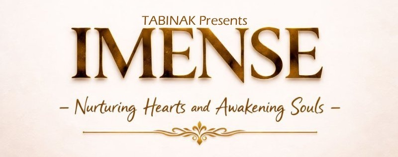

IMENSE
International Mission for Emotional Nurturing and Spiritual Empowerment
𝐍𝐮𝐫𝐭𝐮𝐫𝐢𝐧𝐠 𝐇𝐞𝐚𝐫𝐭𝐬 & 𝐀𝐰𝐚𝐤𝐞𝐧𝐢𝐧𝐠 𝐒𝐨𝐮𝐥𝐬
IMENSE എന്നത് മനുഷ്യരുടെ വൈകാരിക ഉന്നമനവും ആത്മീയ ശക്തീകരണവും ലക്ഷ്യമാക്കി 𝐓𝐀𝐁𝐈𝐍𝐀𝐊 ന്റെ കീഴിൽ രൂപീകരിച്ച ഒരു അന്താരാഷ്ട്ര ദൗത്യമാണ്. ഇന്നത്തെ വേഗതയേറിയ ജീവിതത്തിൽ പലരും മാനസിക സമ്മർദ്ദം, ആന്തരിക സംഘർഷങ്ങൾ, ജീവിതത്തിലെ ആശയക്കുഴപ്പങ്ങൾ എന്നിവയുമായി നിശ്ശബ്ദമായി പോരാടുകയാണ്. അത്തരത്തിലുള്ള സാഹചര്യങ്ങളിൽ മനുഷ്യർക്ക് ആശ്വാസവും ബോധവത്കരണവും ആത്മീയ ഉണർവും നൽകുന്ന ഒരു വേദിയായി IMENSE പ്രവർത്തിക്കുന്നു.
IMENSEയുടെ പ്രധാന ലക്ഷ്യം ഓരോ വ്യക്തിയെയും അവരുടെ ആന്തരിക ശക്തിയുമായി, മാനസിക സമത്വവുമായി, ആത്മീയ ബോധവുമായി വീണ്ടും ബന്ധിപ്പിക്കുകയാണ്. ശരീരാരോഗ്യമോ ബാഹ്യ വിജയങ്ങളോ മാത്രമല്ല യഥാർത്ഥ സമ്പൂർണ്ണത; അത് മനുഷ്യന്റെ ഭാവനകളുടെ വ്യക്തത, ഉള്ളിലെ സമാധാനം, സ്വയം തിരിച്ചറിയൽ എന്നിവയിലൂടെയാണ് ഉണ്ടാകുന്നത് എന്നതാണ് IMENSEയുടെ വിശ്വാസം.
വിവിധ മാർഗനിർദ്ദേശ പരിപാടികൾ, ആത്മപരിശോധന പ്രാക്ടീസുകൾ, മനസ്സ് തുറന്ന് പങ്കുവെക്കാൻ കഴിയുന്ന സംവാദങ്ങൾ എന്നിവയിലൂടെ IMENSE ആളുകൾക്ക് അവരുടെ ചിന്തകളും വികാരങ്ങളും ജീവിതാനുഭവങ്ങളും സുരക്ഷിതവും വിധിയില്ലാത്തതുമായ അന്തരീക്ഷത്തിൽ അന്വേഷിക്കാൻ അവസരം നൽകുന്നു. ഇതിലൂടെ വ്യക്തികൾക്ക് അവരുടെ വികാരങ്ങളെ മനസ്സിലാക്കാനും, അവയെ സുതാര്യമായി കൈകാര്യം ചെയ്യാനും, ഉള്ളിലുള്ള ബോധവും ശക്തിയും തിരിച്ചറിയാനും സഹായിക്കുന്നു.
IMENSE ഒരു സംഘടന മാത്രമല്ല; മനുഷ്യന്റെ ഉള്ളിലെ സാധ്യതകളെ ഉണർത്താനുള്ള ഒരു ദൗത്യമാണ്. ഓരോ വ്യക്തിയുടെയും ഉള്ളിൽ തന്നെ ഒരു ആന്തരിക ശബ്ദം നിലനിൽക്കുന്നു — അത് വ്യക്തിയെ വഴിനടത്തുന്ന ബുദ്ധിയും സമാധാനവും വ്യക്തതയും നൽകുന്ന ഉറവിടമാണ്. ആ ശബ്ദത്തെ കേൾക്കാനും തിരിച്ചറിയാനും പഠിക്കുമ്പോൾ മനുഷ്യൻ തന്റെ ജീവിതത്തെ കൂടുതൽ അർത്ഥവത്തായി മാറ്റാൻ കഴിയും.
IMENSEയുടെ വിവിധ പരിപാടികൾ, പരിശീലനങ്ങൾ, ഹീലിംഗ് പ്രോഗ്രാമുകൾ എന്നിവയുടെ വഴി മനുഷ്യരെ മാനസിക പക്വതയിലേക്കും ആത്മീയ ബോധത്തിലേക്കും ബോധപൂർണ്ണമായ ജീവിതത്തിലേക്കും നയിക്കുകയാണ് ലക്ഷ്യം. അവസാനമായി, IMENSE മനുഷ്യരെ അകത്തളത്തിലെ ആശയക്കുഴപ്പങ്ങളിൽ നിന്ന് വ്യക്തതയിലേക്കും, സമ്മർദ്ദങ്ങളിൽ നിന്ന് സമാധാനത്തിലേക്കും, സാധാരണ ജീവിതത്തിൽ നിന്ന് അർത്ഥപൂർണ്ണമായ ജീവിതത്തിലേക്കും നയിക്കുന്ന ഒരു അന്താരാഷ്ട്ര പ്രസ്ഥാനമാണ്.